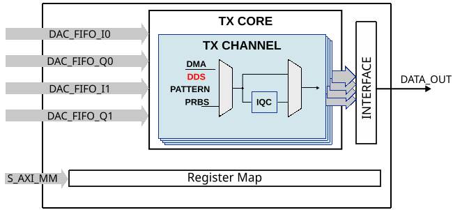
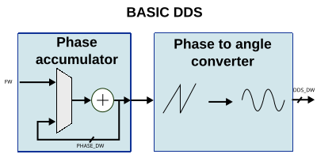
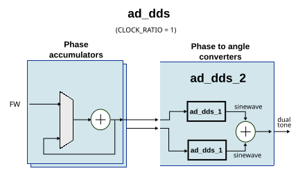
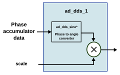
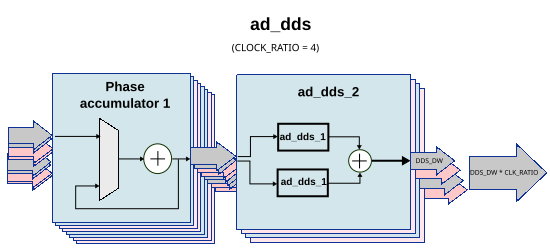
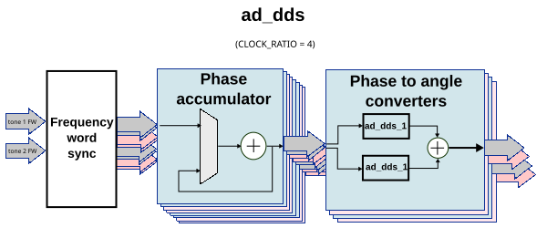
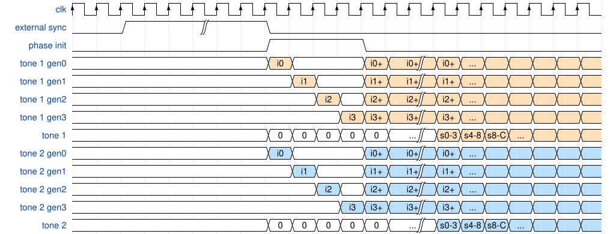

AD Direct Digital Synthesis
The AD Direct Digital Synthesis (DDS) module is used to generate sine waves on a clock (referenced to sampling clock).
Typically, in the reference designs each HDL DAC interface IP has a DDS for every channel.

The resulting sine wave can be changed at runtime by 4 parameters:
frequency word (FW)
phase shift
scale (the peak to peak amplitude of the sine wave)
clock frequency (sampling rate - where possible)
DDS basics
A generic DDS consists of a phase accumulator and a phase to amplitude converter.
The phase accumulator is basically a counter that increments by a frequency word which determines a timely overflow (the actual period of the resulting signal).

The phase to amplitude converter is a bit more complex and is the main consumer of FPGA resources out of the DDS modules.
Currently in the reference designs, there is support for 2 types of phase to amplitude converters, polynomial and CORDIC. The polynomial type uses more DSPs and way less LUTs and FFs in comparison to the CORDIC. Regarding precision/accuracy, CORDIC is better.
Note
The CORDIC implementation is not optimal. The CORDIC phase to amplitude converter outputs a sine and a cosine, which can be used as I and Q. But because the DAC channel reference design requires dual tone + independent I/Q control, only the sine component is used out of a DDS instance, and multiple DDS instances are added for each tone and independent I/Q channels.
ADI DDS module
Parameters
Name |
Description |
Default Value |
|---|---|---|
|
Disable DDS |
0 |
|
DDS out data bus width range 8-24 |
16 |
|
DDS phase accumulator data width range 8-32. |
16 |
|
1 for CORDIC or 2 for Polynomial. |
1 |
|
CORDIC stages data width, range 8-24 |
16 |
|
Number of CORDIC stages, range 8-32 |
16 |
|
|
0 |
Interface
Interface |
Type |
Description |
|---|---|---|
|
|
Input clock |
|
|
Two’s complement (0) or offset binary (1) |
|
|
Data sync/external phase sync |
|
|
Valid signal (ready for new data) |
|
|
Tone 1 scale |
|
|
Tone 2 scale |
|
|
Tone 1 initial offset (phase shift) |
|
|
Tone 2 initial offset (phase shift) |
|
|
Tone 1 frequency word |
|
|
Tone 2 frequency word |
|
|
Out sine wave |
Control
In the reference designs, the DDS is controlled through the register map (DAC channel section).
Address |
Reg Name |
|||||
|---|---|---|---|---|---|---|
HDL |
DWORD |
BITS |
Field Name |
Type |
Default Value |
Description |
0x100 + 0x10*n |
0x400 + 0x40*n |
CHAN_CNTRLn_1 |
DAC Channel Control & Status (channel - 0) Where n is from 0 to 15. |
|||
[21:16] |
DDS_PHASE_DW |
RO |
0x00 |
The DDS phase data width offers the HDL parameter configuration with the same name. This information is used in conjunction with CHAN_CNTRL_9 and CHAN_CNTRL_10. More info at AD Direct Digital Synthesis. |
||
[15:0] |
DDS_SCALE_1 |
RW |
0x0000 |
The DDS scale for tone 1. Sets the amplitude of the tone. The format is 1.1.14 fixed point (signed, integer, fractional). The DDS in general runs on 16-bits, note that if you do use both channels and set both scale to 0x4000, it is over-range. The final output is (tone_1_fullscale * scale_1) + (tone_2_fullscale * scale_2). NOT-APPLICABLE if DDS_DISABLE is set (0x1). |
||
0x101 + 0x10*n |
0x404 + 0x40*n |
CHAN_CNTRLn_2 |
DAC Channel Control & Status (channel - 0) Where n is from 0 to 15. |
|||
[31:16] |
DDS_INIT_1 |
RW |
0x0000 |
The DDS phase initialization for tone 1. Sets the initial phase offset of the tone. NOT-APPLICABLE if DDS_DISABLE is set (0x1). |
||
[15:0] |
DDS_INCR_1 |
RW |
0x0000 |
Sets the frequency of the phase accumulator. Its value can be calculated by \(INCR = (f_{out} * 2^{16}) * clkratio / f_{if}\); where f_out is the generated output frequency, and f_if is the frequency of the digital interface, and clock_ratio is the ratio between the sampling clock and the interface clock. If DDS_PHASE_DW is greater than 16(from CHAN_CNTRL_1), the phase increment for tone 1 is extended in CHAN_CNTRL_9. NOT-APPLICABLE if DDS_DISABLE is set (0x1). |
||
0x102 + 0x10*n |
0x408 + 0x40*n |
CHAN_CNTRLn_3 |
DAC Channel Control & Status (channel - 0) Where n is from 0 to 15. |
|||
[15:0] |
DDS_SCALE_2 |
RW |
0x0000 |
The DDS scale for tone 2. Sets the amplitude of the tone. The format is 1.1.14 fixed point (signed, integer, fractional). The DDS in general runs on 16-bits, note that if you do use both channels and set both scale to 0x4000, it is over-range. The final output is (tone_1_fullscale * scale_1) + (tone_2_fullscale * scale_2). NOT-APPLICABLE if DDS_DISABLE is set (0x1). |
||
0x103 + 0x10*n |
0x40c + 0x40*n |
CHAN_CNTRLn_4 |
DAC Channel Control & Status (channel - 0) Where n is from 0 to 15. |
|||
[31:16] |
DDS_INIT_2 |
RW |
0x0000 |
The DDS phase initialization for tone 2. Sets the initial phase offset of the tone. If DDS_PHASE_DW is greater than 16(from CHAN_CNTRL_1), the phase init for tone 2 is extended in CHAN_CNTRL_10. NOT-APPLICABLE if DDS_DISABLE is set (0x1). |
||
[15:0] |
DDS_INCR_2 |
RW |
0x0000 |
Sets the frequency of the phase accumulator. Its value can be calculated by \(INCR = (f_{out} * 2^{16}) * clkratio / f_{if}\); where f_out is the generated output frequency, and f_if is the frequency of the digital interface, and clock_ratio is the ratio between the sampling clock and the interface clock. If DDS_PHASE_DW is greater than 16(from CHAN_CNTRL_1), the phase increment for tone 2 is extended in CHAN_CNTRL_10. NOT-APPLICABLE if DDS_DISABLE is set (0x1). |
||
0x104 + 0x10*n |
0x410 + 0x40*n |
CHAN_CNTRLn_5 |
DAC Channel Control & Status (channel - 0) Where n is from 0 to 15. |
|||
[31:16] |
DDS_PATT_2 |
RW |
0x0000 |
The DDS data pattern for this channel. |
||
[15:0] |
DDS_PATT_1 |
RW |
0x0000 |
The DDS data pattern for this channel. |
||
0x105 + 0x10*n |
0x414 + 0x40*n |
CHAN_CNTRLn_6 |
DAC Channel Control & Status (channel - 0) Where n is from 0 to 15. |
|||
[2] |
IQCOR_ENB |
RW |
0x0 |
if set, enables IQ correction. NOT-APPLICABLE if DAC_DP_DISABLE is set (0x1). |
||
[1] |
DAC_LB_OWR |
RW |
0x0 |
If set, forces DAC_DDS_SEL to 0x8, loopback If DAC_LB_OWR and DAC_PN_OWR are both set, they are ignored |
||
[0] |
DAC_PN_OWR |
RW |
0x0 |
IF set, forces DAC_DDS_SEL to 0x09, device specific pnX If DAC_LB_OWR and DAC_PN_OWR are both set, they are ignored |
||
0x106 + 0x10*n |
0x418 + 0x40*n |
CHAN_CNTRLn_7 |
DAC Channel Control & Status (channel - 0) Where n is from 0 to 15. |
|||
[3:0] |
DAC_DDS_SEL |
RW |
0x0 |
Select internal data sources (available only if the DAC supports it).
|
||
0x107 + 0x10*n |
0x41c + 0x40*n |
CHAN_CNTRLn_8 |
DAC Channel Control & Status (channel - 0) Where n is from 0 to 15. |
|||
[31:16] |
IQCOR_COEFF_1 |
RW |
0x0000 |
IQ correction (if equipped) coefficient. If scale & offset is implemented, this is the scale value and the format is 1.1.14 (sign, integer and fractional bits). If matrix multiplication is used, this is the channel I coefficient and the format is 1.1.14 (sign, integer and fractional bits). NOT-APPLICABLE if IQCORRECTION_DISABLE is set (0x1). |
||
[15:0] |
IQCOR_COEFF_2 |
RW |
0x0000 |
IQ correction (if equipped) coefficient. If scale & offset is implemented, this is the offset value and the format is 2’s complement. If matrix multiplication is used, this is the channel Q coefficient and the format is 1.1.14 (sign, integer and fractional bits). NOT-APPLICABLE if IQCORRECTION_DISABLE is set (0x1). |
||
0x108 + 0x10*n |
0x420 + 0x40*n |
USR_CNTRLn_3 |
DAC Channel Control & Status (channel - 0) Where n is from 0 to 15. |
|||
[25] |
USR_DATATYPE_BE |
RW |
0x0 |
The user data type format- if set, indicates big endian (default is little endian). NOT-APPLICABLE if USERPORTS_DISABLE is set (0x1). |
||
[24] |
USR_DATATYPE_SIGNED |
RW |
0x0 |
The user data type format- if set, indicates signed (2’s complement) data (default is unsigned). NOT-APPLICABLE if USERPORTS_DISABLE is set (0x1). |
||
[23:16] |
USR_DATATYPE_SHIFT |
RW |
0x00 |
The user data type format- the amount of right shift for actual samples within the total number of bits. NOT-APPLICABLE if USERPORTS_DISABLE is set (0x1). |
||
[15:8] |
USR_DATATYPE_TOTAL_BITS |
RW |
0x00 |
The user data type format- number of total bits used for a sample. The total number of bits must be an integer multiple of 8 (byte aligned). NOT-APPLICABLE if USERPORTS_DISABLE is set (0x1). |
||
[7:0] |
USR_DATATYPE_BITS |
RW |
0x00 |
The user data type format- number of bits in a sample. This indicates the actual sample data bits. NOT-APPLICABLE if USERPORTS_DISABLE is set (0x1). |
||
0x109 + 0x10*n |
0x424 + 0x40*n |
USR_CNTRLn_4 |
DAC Channel Control & Status (channel - 0) Where n is from 0 to 15. |
|||
[31:16] |
USR_INTERPOLATION_M |
RW |
0x0000 |
This holds the user interpolation M value of the channel that is currently being selected on the multiplexer above. The total interpolation factor is of the form M/N. NOT-APPLICABLE if USERPORTS_DISABLE is set (0x1). |
||
[15:0] |
USR_INTERPOLATION_N |
RW |
0x0000 |
This holds the user interpolation N value of the channel that is currently being selected on the multiplexer above. The total interpolation factor is of the form M/N. NOT-APPLICABLE if USERPORTS_DISABLE is set (0x1). |
||
0x10a + 0x10*n |
0x428 + 0x40*n |
USR_CNTRLn_5 |
DAC Channel Control & Status (channel - 0) Where n is from 0 to 15. |
|||
[0] |
DAC_IQ_MODE |
RW |
0x0 |
Enable complex mode. In this mode the driven data to the DAC must be a sequence of I and Q sample pairs. |
||
[1] |
DAC_IQ_SWAP |
RW |
0x0 |
Allows IQ swapping in complex mode. Only takes effect if complex mode is enabled. |
||
0x10b + 0x10*n |
0x42c + 0x40*n |
CHAN_CNTRLn_9 |
DAC Channel Control & Status (channel - 0) Where n is from 0 to 15. |
|||
[31:16] |
DDS_INIT_1_EXTENDED |
RW |
0x0000 |
The extended DDS phase initialization for tone 1. Sets the initial phase offset of the tone. The extended init(phase) value should be calculated according to DDS_PHASE_DW value from CHAN_CNTRL_1 NOT-APPLICABLE if DDS_DISABLE is set (0x1). |
||
[15:0] |
DDS_INCR_1_EXTENDED |
RW |
0x0000 |
Sets the frequency of tone 1’s phase accumulator. Its value can be calculated by \(INCR = (f_{out} * 2^{phaseDW}) * clkratio / f_{if}\); Where f_out is the generated output frequency, DDS_PHASE_DW value can be found in CHAN_CNTRL_1 in case DDS_PHASE_DW is not 16, f_if is the frequency of the digital interface, and clock_ratio is the ratio between the sampling clock and the interface clock. NOT-APPLICABLE if DDS_DISABLE is set (0x1). |
||
0x10c + 0x10*n |
0x430 + 0x40*n |
CHAN_CNTRLn_10 |
DAC Channel Control & Status (channel - 0) Where n is from 0 to 15. |
|||
[31:16] |
DDS_INIT_2_EXTENDED |
RW |
0x0000 |
The extended DDS phase initialization for tone 2. Sets the initial phase offset of the tone. The extended init(phase) value should be calculated according to DDS_PHASE_DW value from CHAN_CNTRL_2 NOT-APPLICABLE if DDS_DISABLE is set (0x1). |
||
[15:0] |
DDS_INCR_2_EXTENDED |
RW |
0x0000 |
Sets the frequency of tone 2’s phase accumulator. Its value can be calculated by \(INCR = (f_{out} * 2^{phaseDW}) * clkratio / f_{if}\); Where f_out is the generated output frequency, DDS_PHASE_DW value can be found in CHAN_CNTRL_2 in case DDS_PHASE_DW is not 16, f_if is the frequency of the digital interface, and clock_ratio is the ratio between the sampling clock and the interface clock. NOT-APPLICABLE if DDS_DISABLE is set (0x1). |
||
Access Type |
Name |
Description |
|---|---|---|
RO |
Read-only |
Reads will return the current register value. Writes have no effect. |
RW |
Read-write |
Reads will return the current register value. Writes will change the current register value. |
Config
DDS_SCALE
The DDS scale for a tone contributes to the amplitude of the channel (I or Q - where it applies).
The format is 1.1.14 fixed point. See below:
16 bit register = scale value |
||
|---|---|---|
1 bit sign |
1 bit integer |
14 bits fractional |
The DDS scale is on 16 bits.
The channel output is equal to tone_1_fullscale * scale_1) + (tone_2_fullscale * scale_2).
The phase to amplitude converter always outputs the full-scale (unity sine) sine wave, independent on the phase and data widths.
Note
If you do use both tones and set both scales to 0x4000, the channel output will over-range.
16’h4000 * 1 + 16’h4000 * 1 = 16’h8000 = 16’h1000000000000000
sign = 1’b1
integer = 1’b0
fract = 14’b0
PHASE - DDS_INIT
All tones/channels start on a sync event (internal or external). The DDS_INIT value will be used by the phase accumulator as a starting point in other words as a phase offset.
The offset can be determined from the phase accumulator capacity 0 to \(2^{phaseDW}\) represents (0° - 360°).
e.g., for 90°. \(init = (90 * 2^{phaseDW})/360\).
FREQUENCY - DDS_INCR
The value can be calculated by:
Where:
f_out is the generated output frequency
phaseDW (
DDS_PHASE_DW) value can be found inCHAN_CNTRL_1in caseDDS_PHASE_DWis not eq. 16f_if is the frequency of the digital interface
clock_ratio is the ratio between the sampling clock and the interface clock.
STRUCTURE
Below is the hierarchical structure of the modules.
* ad_dds ->
* ad_dds_2 ->
* ad_dds_1 ->
* ad_dds_sine_*
ad_dds
ad_dds is the main module, it contains the phase accumulators and the phase to amplitude converters.

ad_dds_2
ad_dds_2 contains two phase to amplitude converters. The resulting waveforms will be summed. The resulting waveform must have a maximum amplitude level of 0x8000 -1. When only one tone is desired, both tones must have the same frequency word and shift, there is no constraint for the amplitude, but if is equal for both channels, it should not be more than 0x400 -1 for each channel.
ad_dds_1
ad_dds_1 contains the phase to amplitude converter and an “amplifier”. The phase to amplitude converter is always generating a full scale sine wave. Because the data format is two’s complement, for a 16-bit data angle, min value will be -(2^16)/2 and max (2^16)/2-1.

ad_dds_sine_*
ad_dds_sine and ad_dds_sine_cordic are the available phase to amplitude converters.
CLOCK RATIO
The clock ratio (number of data paths processed in parallel) instantiates more DDS logic, but it is controlled by the same register map for all CLOCK_RATIO/DATA_PATH parameters.
Where is the CLOCK_RATIO > 1? This scenario can be found in every high speed DAC design. It is required because the FPGA fabric can’t work at the same speed as that of the high-speed converter (typically > 250M).
Let’s take the DAQ2 (AD9144) as an example, where the clock ratio is 4. This ratio is chosen for the maximum sampling frequency 1GSPS; this results in an internal clock of 250MHz (device clock), which is closer to the upper limit of what some FPGAs can handle. So, in one clock cycle (250M) it needs to generate 4 consecutive samples to keep up with the DAC. This is done by 4 DDS modules. The phase accumulator part is all in one place and the phase to amplitude converters have dedicated sub-modules, as described above. When the frequency is changed by software, the 4 phase accumulators are aligned for the new frequency word and/or frequency phase shift. The counter increment value will be multiplied with the clock ratio (4), to get a continuity of the 4 consecutive samples generated at t, t+1, t+2, and so on.

For scenarios where the synchronization signal comes from an external source and it is high for a longer period of time, the phase accumulator stages will be hold in reset, to avoid a noise-like signal, caused by sending all the summed outputs of each DDS stage.
There is a minimum synchronization pulse width (delay) of n clock cycles, that is required to synchronize all phase accumulator stages, where n is equal to the CLOCK_RATIO.


In the above diagram example:
CLOCK_RATIO = 4
i0 = phase offset
i1 = i0 + FW
i2 = i1 + FW
i3 = i2 + FW
Each i is on 16 bits and each “s”(0-3) is on 64 bits. i(t)+ is the value of the previous i(t) plus the increment (FW*CLOCK_RATIO).
It should be mentioned that after the phase init fall-edge, until the first valid sample, there is a delay caused by the phase to angle converter type and in the case of the CORDIC type, the number of rotation stages will also have a direct impact on this clock period delay.